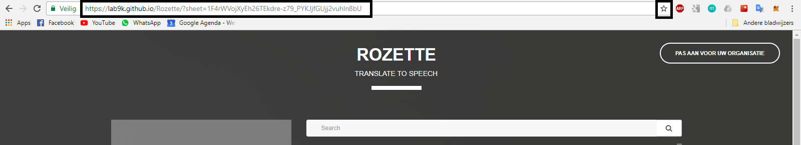

Deze tutorial legt stap voor stap uit hoe je een translate to speech pagina aanmaakt voor jouw organisatie.
Maak een google account aan als je er nog geen hebt.
Ga naar deze google spreadsheet
Klik op "Bestand" en vervolgens op "Een kopie maken..."
Nu kan je de naam aanpassen. Klik daarna op "OK". Vervolgens wordt de spreadsheet aangemaakt en geopend.
Om de data van de spreadsheet publiek te maken klik op "bestand" en vervolgens op "publiceren op internet..."
Klik op "Extra" en vervolgens "Scripteditor...".
Klik op "Bestand" en vervolgens op "Een kopie maken...".
Klik daarna op "Uitvoeren" en dan "Functie uitvoeren > updateSheet".
Wacht even tot wanneer de melding "Autorisatie vereist" verschijnt en klik dan op "Rechten bekijken".
Selecteer uw google drive account.
Klik op "Geavanceerd", dan op "Ga naar (...)" en tenslotte op "Toestaan"
Het gekoppeld script doet de rest voor u. Sit back and relax terwijl de spreadsheet gegenereerd wordt.
*: niet alle talen worden ondersteund. Klik hier voor een overzicht.Kopiëer de url van uw eigen spreadsheet en geef ze hier in om uw eigen pagina te genereren:
Vervolgens zal u naar de hoofdpagina herleid worden van Rozette
Om de volgende keer terug deze pagina te bezoeken raden wij aan om deze url ergens op te slaan bij uw favorieten.
Klik op het "sterretje" om de website die nu open staat bij uw favorieten toe te voegen.
